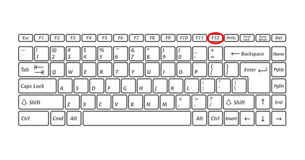
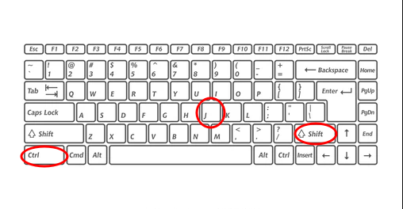

What's it?
Developer tools are a set of tools built into the browser, designed to make it easy to develop web applications. Most browsers have a developer toolkit, however, we are going to talk about Chrome Developer Tools because it's the most complete and most popular set of tools.
How to open?
To open developer tools, we have 3 options:
|
1. Right Click + Inspect Element |

|
|
2. Press Ctrl + Mayus + J |
 |
|
3. Press F12 |
 |
Elements Panel
In this section, we can see the html and css code of the page and edit it. Shows the rendered HTML of the page, which is distinct from the page's source code. If any HTML elements are created or edited using JavaScript while the page is loading, the changes will be reflected in the rendered HTML, while the page's source code will be displayed without any alteration. Here we have a video that gives us a deeper explanation about this panel.
Console Panel
This is an open javascript console. It's one of the most powerful tools. In it you have access to the Javascript of the page you are inspecting and therefore you can execute the functions and use the libraries that are available. For example, open the developer tools on this page and in the console run the following line of code:
alert("Hi!")
You'll see how the page will launch a message that will tell us: Hi!
Sources Panel
Allows you to inspect a table of the various resources that have been loaded along with the page being inspected. It includes images, HTML documents and JavaScript files, among other elements. This tab is very useful for troubleshooting because the search function will take into account all the available resources of the page and will not only do the search on the page that we have open.
Network Panel
This is a very interesting panel. At the top you will see a timeline showing the response times for each request. You can use this information to optimize your page load times. At the bottom you will see a table with the details of each request. These details include:
Path: URL to which the request is made.
Method: Method or used to send the request.
Status: Response code.
Type: Response type.
Size: Size in bytes of the response.
Time: Time it took for the browser to receive the response.
If you click on a request you will be able to see more details of that request.
Timeline Panel
Shows HTTP traffic and memory usage over the time. Like the Network panel, it can be helpful in identifying the sources of latencies and try to improve them or find a way to fix any issues.
Application Panel
It's responsible for inspecting the resources that must be loaded from the website, including stored data (Local Storage, Session Storage, IndexedDB, Web SQL, Cookies), cached data, fonts, images, scripts, style sheets, etc.
Security Panel
Detect any security issues in the code. You can debug mixed content, your certificate, and other issues. It also tells us if the page can be considered safe or not.